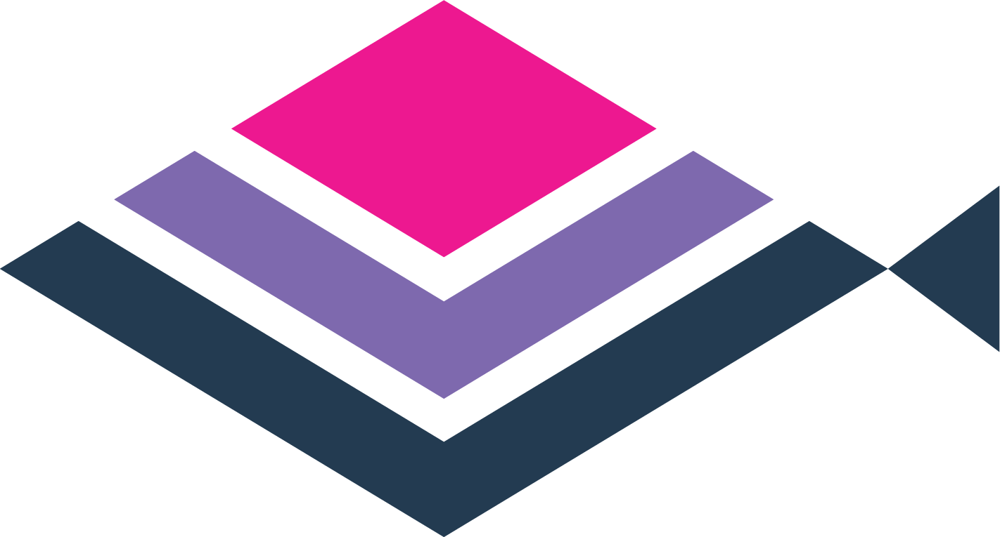

Open Source
Open source projects I’ve been involved with.
dbverse
I am the creator and lead developer of dbverse, a metalibrary for large-scale scientific data analysis in a database.
| Project | Description | Role | Other References |
|---|---|---|---|
dbverse 
|
An ecosystem of database libraries for larger-than-memory scientific analytics. | Creator | Slides, Talk |
dbMatrix 
|
A database library for larger-than-memory matrix operations. | Creator | |
dbSpatial 
|
A database library for larger-than-memory spatial operations. | Creator |
No matching items
 Giotto Suite
I am a core contributor and co-developer of Giotto Suite, a modular suite of R packages for multi-scale and multi-omic spatial analysis.
| Project | Description | Role | Other References |
|---|---|---|---|
Giotto 
|
Spatial omics analysis toolbox | Core Contributor | |
GiottoClass 
|
Giotto object and subobject class definitions and frameworks | Core Contributor | |
GiottoUtils 
|
GiottoUtils exports functionalities that are called internally by many of the other packages in the Giotto ecosystem | Core Contributor | |
GiottoDB 
|
GiottoDB contains classes from the dbverse for working with larger-than-memory spatial omics data | Co-creator, Core Contributor |
No matching items
Credit
This page is heavily inspired by the page of the same name by Hamel Husain.